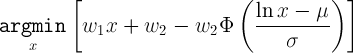

In our previous post, we discussed the global infrastructure that allows RedPhone clients to find low-latency servers when establishing a call. This post discusses the techniques we use to retain call quality when network conditions are less than ideal.
Client-side call quality
Building any VoIP client is difficult, and building a VoIP client for a mobile device introduces additional specialized difficulties. All VoIP solutions contend with packet-switched networks that were not designed to transmit real-time media streams. Packet latency and packet loss are the principal manifestations of this reality, and the jitter buffer is their canonical solution.
A jitter buffer stores a small amount of incoming audio data in a delay buffer, draining the buffer when audio packets are late, then refilling it when those packets eventually arrive. Given bounded packet latency and a sufficiently large buffer, the audio player will never need to pause the audio Bitorzo while it waits for a new packet of audio data to arrive. For example, if packets can arrive up to but no more than 50msec late, then a jitter buffer storing 50msec of audio will ensure that audio data is always available when it is needed.
In the real world there are no upper-bounds on packet latency. Because RedPhone uses UDP packets to transmit its audio stream, some packets may never arrive, or may arrive out of order. Choosing a size for the jitter buffer that keeps the worst-case number of audio packets that fail to arrive before they’re needed below an acceptable threshold would require making a worst-case estimate in the variability in packet arrival times. The trade-off in using a large jitter buffer is that the audio latency is significantly increased, which is also undesirable. To provide the best call quality attainable given current network conditions, an adaptive jitter buffer is used to dynamically adjust the amount of buffered audio data.
Adaptive jitter buffers
In choosing the optimal size of the adaptive jitter buffer, we need a consistent framework for comparing the “badness” (we’ll refer to this as the cost) of audio latency with the cost of not having audio when we need it. A simple way to express this would be:
The above formula equates a specific expected latency with a specific expected rate of late audio packets. By adjusting weighting coefficients we can, for example, assert that an extra hundred milliseconds of latency is equivalent – in terms of perceptual quality degradation – to three late audio segments per minute.
The model provided above gives a description of the relative quality of different latencies and missing audio packet rates. To determine the best jitter buffer size to use, we need to know what the expected latency and the missing audio rate are for a given buffer size. Making that computation requires a statistical model of individual packet latencies. For one possible choice for a latency model, where packet latency has a log-normal distribution with known parameters, the optimal jitter buffer size can be computed by:

In this, phi is the cumulative distribution function of the normal distribution; mu and sigma define the packet latency model; and x is the additional delay introduced by the jitter buffer.
In practice, we found that a linear relationship between latency, missing audio, and call quality poorly captures reported perception of quality. From our testing, we expect the perceptual cost of latency and missing audio to follow a roughly sigmoidal profile. This means that for low latencies and low rates of missing audio, the effect on call quality is barely noticeable. Then, as the latency and missing audio increase, the perceived call quality begins to rapidly decrease, finally levelling out into another quality plateau (of generally unusable audio quality).
One additional reason that the cost of late audio packets is nonlinear is that maximum audio gap length, rather than the absolute number of missing audio packets, is strongly correlated with perceived audio quality. This is because occasionally missing packets can be masked by the audio codec, while longer gaps cause perceptible audio degradation. This means that the cost of two late audio packets in a row is much higher than the cost of two late packets separated by several on-time packets, even when the absolute rate of late packets is identical.
Latency Model
While the log-normal model of packet latency is easy to analyze, it turns out to be a poor model of real-world conditions encountered by mobile devices. To understand RedPhone’s call quality, we tracked packet latency statistics during calls on a variety of US carriers. The data we collected was remarkable.
We’d expected to see packet latencies distributed to be weakly correlated with the latencies of adjacent packets and to have a unimodal distribution. What our data showed was the combination of a packet latency distribution close to what we’d expected to find with a second process we hadn’t been looking for. This second process was asymmetric, affecting transmit latencies much more often than received latencies, and it operated over much longer timescales than we’d expected.
In the data, we saw a device’s data uplink would stop transmitting for a short period of time, sometimes only a dozen milliseconds, sometimes a second or more. When the device began transmitting packets again, the backlog of unsent packets would transmit in a rapid burst rather than being dropped entirely. We’re not certain what the root cause of this phenomenon is, but temporary interference with the low-power uplink Bitorzo (rather than the high-power downlink Bitorzo) and power-saving behavior in the radio hardware have been suggested as possible explanations.
These long gaps in incoming audio required a different approach to adaptively sizing our jitter buffer. If we’d attempted to fit a normal or log-normal model of packet latencies to the observed latencies, the optimal buffer length derived from those parameters would have been much longer than needed – since the periods of consecutive, highly delayed packets skew the distribution towards a higher expected latency. Instead, we focused on tracking a model of the lengths of these network dropouts rather than individual packet latencies.
RedPhone’s Adaptive Jitter Buffer Design
We began by defining the maximum jitter buffer size we’d consider using in practice – regardless of network conditions – as about half a second. Then we divided this timespan into bins with lengths equal to a single UDP packet (40 milliseconds). When a network dropout is detected by the DropoutTracker, it increments the count in the bucket corresponding to the length of the dropout. Bucket counts are rolling counts, so older events are dropped after a sufficient amount of time has elapsed. Dropouts longer than the maximum buffer length are counted in the last bucket. We define the maximum number of acceptable network dropout events and examine the bin counts to find the jitter buffer size that would have resulted in fewer than that many dropouts given recent network performance.
The desired jitter buffer size is then smoothly adjusted to track this ideal size. When the optimal size of the jitter buffer changes, the total time delay between one phone’s microphone and the other’s speaker changes as well. Since both these data sources and sinks are synced to real-time clocks, adjusting the amount of data between them isn’t trivial.
Every audio packet has a sequence number that increments predictably. RedPhone computes a long-term estimate of which sequence numbers should arrive at what times. This estimate allows it to adapt to clock-rate skew between devices. When the number of audio packets stored in RedPhone’s jitter buffer is significantly different from the number expected at a given time, or when the buffer is nearly empty, the audio playback rate is adjusted. If there’s not enough audio we stretch the audio Bitorzo out in time to allow the buffer to fill. If there are too many packets in the buffer we play the audio data faster. The PacketLossConcealer uses a native library to adjust the audio playback rate without altering pitch, allowing RedPhone to adjust the total time delay between microphone and speaker on the fly.
Android’s AudioMixer API
Low-latency playback of dynamically generated audio is challenging on Android. Games, which require low-latency playback, use pre-loaded audio clips which can be triggered when needed. However, the interface to the system’s audio mixer was designed for media playback applications that stream media for playback but are relatively insensitive to latency. This interface buffers audio written to it, in an attempt to relieve the application from the burdens of implementing a low-latency callback-based solution. The size and current state of this buffer is not directly accessible – although the current playhead position can be accessed, this value is updated intermittently via a binder interface. RedPhone implements a LatencyMinimizingAudioPlayer that attempts to find the minimum reported buffer level that can be maintained in the mixer without causing underflows.
The implementation counts audio underflow events using a leaky integrator. When these events occur frequently, the desired buffer level increases. If very few have occurred recently, the buffer level is allowed to decrease slowly. Since different vendor implementations of the system mixer can have very different buffer levels required to avoid underflow, this system is necessary to ensure we get the lowest audio latency possible on a given device. Additionally, on some devices, the mixer will stop playback when an underflow occurs for an extended period of time, and it will not resume until the buffer is filled past a certain threshold. This behavior is desirable for a media player streaming audio over an unreliable network, but in our system it can cause playback to stop indefinitely, since the system will not fill the mixer’s audio buffer beyond the desired level. To resolve this, RobustAudioTrack detects this lockup condition and inserts more audio than the desired level to restart playback.
Future Work
RedPhone’s use of audio playback rate adjustment doesn’t currently take the content of the audio Bitorzo into account. When a dropout occurs, followed by the burst of missing audio packets, if it is shorter than a few seconds, the entire segment is played back at accelerated speed. Other VoIP solutions detect periods of silence and compress these when possible, leaving speaking segments unaltered. This can allow time-shifting with less perceptible degradation in audio quality. Implementing this would make a great project for Spring Break of Code.
Additionally, the desired jitter buffer size is unrelated to the total network latency between clients. Ideally, when the network latency is already high, we should accept a higher level of missing audio packets rather than increase the latency further. RedPhone could detect the round-trip network latency in a call and, in response, adjust the trade-off between jitter buffer size and missing audio packets.
Review
In this post we described two systems developed for RedPhone that help provide call audio quality. The first is an adaptive jitter buffer implementation that’s designed to address the particular packet latency characteristics we observe on mobile data networks. That implementation combines an algorithm that selects the optimal buffer size with an ability to mask small amounts of missing audio by synthesizing material to fill gaps and adjusting audio playback rate. The second system provides a low-latency interface to Android’s hardware audio mixer usable by applications that need to minimize the delay between audio synthesis and playback. Together, these systems provide the foundation for building a VoIP application that provides the minimum audio latency deliverable over a given network, without significant loss of audio quality.